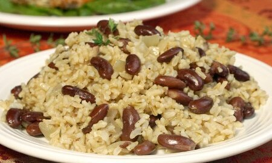

Jamaican Beans and Rice

Description
Sally Fallon's timeless Jamaican Beans and Rice recipe, as featured in her classic cookbook, Nourishing Traditions.
Ingredients
- Kidney beans (1 cup)
- Brown rice (1 cup)
- Coconut milk (1 can)
- Jalapenos (6)
- Green onions (1 bunch)
- Thyme (2 tablespoons)
- Salt (1 tablespoon)
Steps
- Soak beans for 24 hours
- Drain beans and place in pressure cooker with chopped jalapenos, greeon onions, thyme, salt, and coconut milk
- Pressure cook on high for 45 minutes
- While beans are cooking, bring water to a boil
- Add brown rice to boiling water
- Cook brown rice for 45 minutes
- When both rice and beans are done cooking, mix 'em together!